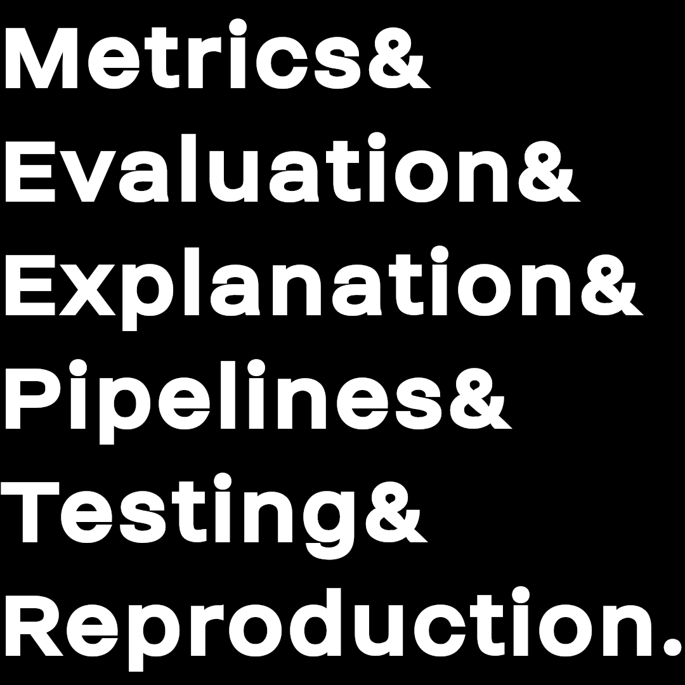

Numerous scientific disciplines have noticed a reproducibility crisis of published results. While this important topic was being addressed, the danger of non-reproducible and unsustainable research artefacts using machine learning in science arose. The brunt of this has been avoided by better education of reviewers who nowadays have the skills to spot insufficient validation practices. However, there is more potential to further ease the review process, improve collaboration and make results and models available to fellow scientists. This workshop will teach practical lessons that can be directly applied to elevate the quality of ML applications in science by scientists.
It seems like we avoided the worst signs of the reproducibility crisis in science when applying machine learning in science. Thanks to better education for reviewers, easier access to tools, and a better understanding of zero-knowledge models.
However, there is much more potential for ML in science. The real world comes with many pitfalls that make the application of machine learning very promising, but the verification of scientific results is complex. Nevertheless, many open-source contributors in the field have worked hard to develop practices and resources to ease this process.
We discuss pitfalls and solutions in model evaluation, where the choice of appropriate metrics and adequate splits of the data is important. We discuss benchmarks, testing, and machine learning reproducibility, where we go into detail on pipelines. Pipelines are a great showcase to avoid the main reproducibility pitfalls, as well as, a tool to bridge the gap between ML experts and domain scientists. Interaction with domain scientists, involving existing knowledge, and communication are a constant undercurrent in producing trustworthy, validated, and reliable machine learning solutions.
Overall, this workshop relies on existing high-quality resources like the Turing Way, more applied tutorials like Jesper Dramsch’s Euroscipy tutorial on ML reproducibility, and professional tools like the Ersilia Hub. Where we utilize real-world examples from different scientific disciplines, e.g. weather and biomedicine.
In this workshop, we present a series of talks from invited speakers that are experts in the application of data science and machine learning to real-world applications. Each talk will be followed by an interactive session to take the theory into practical examples the participants can directly implement to improve their own research. Finally, we close on a discussion that invited active participation and engagement with the speakers as a group.
